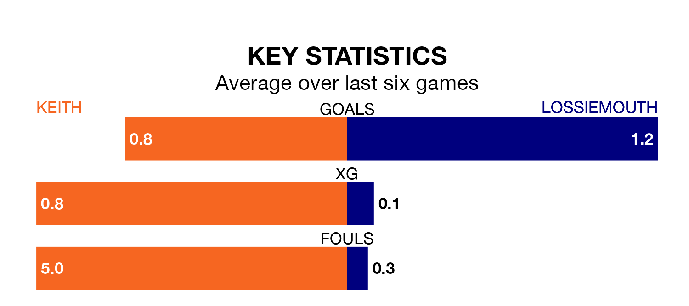

Lossiemouth travel to Keith on Saturday in the Highland Football League.
The visitors come into the game on the back of a win in their last match, having beaten Buckie Thistle 2-1 at home.
Keith, meanwhile, lost their last match, 1-0 against Strathspey Thistle.
In the last 10 years, Keith and Lossiemouth have played each other on 12 occasions. Keith won six of them, Lossiemouth five, and they drew once.
On average, Keith scored 1.9 goals and Lossiemouth 1.8 in those matches.
Their last meeting was on November 11, when Lossiemouth won 1-0 at home.
Keith are 15th in the table after 25 games, of which they have won five and drawn five, earning 20 points.
Lossiemouth are two places ahead of the hosts in 13th, with seven wins and five draws putting them on 26 points.
Keith are in mixed form in the Highland Football League, with two wins and three draws from their last six games.
With a win and two draws over that period, the away side's form is worse – they have taken five points from 18, compared to Keith's nine.
With 28 goals in 25 games so far this season, the home team are the league's second-lowest scorers with 1.1 goals per game. And they are conceding at an average rate, letting in 48 goals at a rate of 1.9 per game.
Lossiemouth are also below average scorers, with 1.1 goals per game, compared to a league average of 1.9. They have conceded 2.0 goals per game.
Updated: 15:10 (UTC), 15/03/24